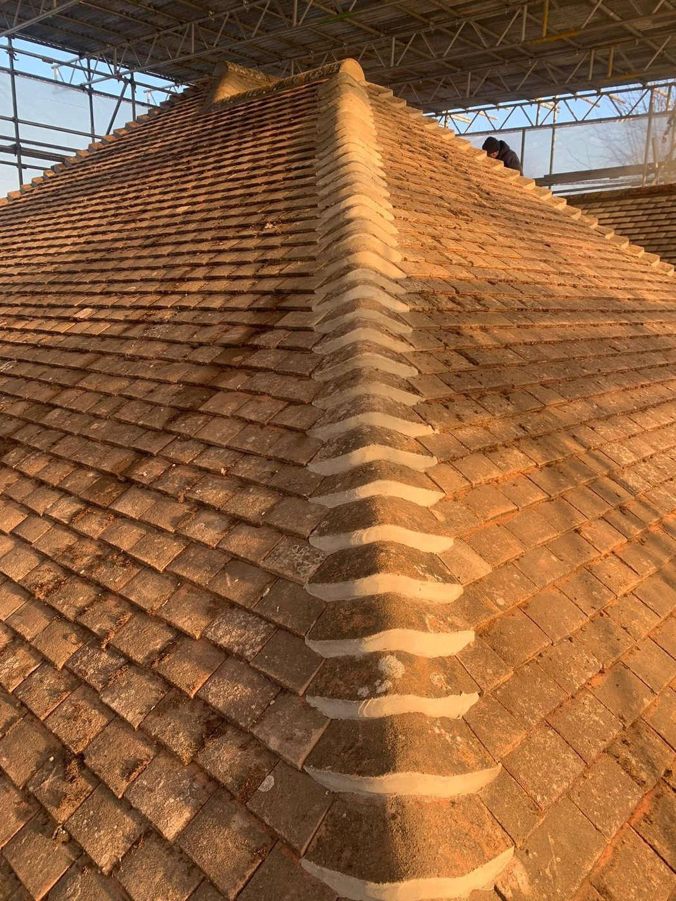

Your local, fully-insured roofing team for Spondon and the surrounding Derbyshire area. Repairs, re-roofs, flat roofing, chimneys and guttering — honest quotes and tidy work.
Spondon, on the eastern edge of Derby, blends a historic village core with large inter-war and post-war estates. As roofers covering Spondon we handle the full range — slipped tiles, leaks, flat roofs, fascias and complete re-roofs.
From a single slipped tile to a full re-roof, we carry out the whole range of roofing work across Spondon, Chaddesden, Borrowash and Ockbrook. Every job comes with a free survey, a clear written quote and a workmanship guarantee — and we leave your property clean and tidy when we're done.

Using a roofer who knows Spondon means we understand the local housing stock, we're close by if anything needs a second look, and we're staking our local reputation on every job. We're fully insured, we turn up when we say we will, and our prices are honest — the quote we give you is the price you pay.
Also covering nearby Borrowash, Chaddesden, Ockbrook, Derby. Get your free quote in Spondon or call 07838 250910.
Full roof replacements and new builds using quality tiles and felt, built to last for decades.
Learn moreSlipped tiles, leaks, storm damage and ridge work — fast, tidy repairs that stop the problem.
Learn moreLong-life EPDM rubber and GRP fibreglass flat roofs for extensions, garages and dormers.
Learn moreChimney repairs, rebuilds, flashing and lead work to keep water where it belongs.
Learn moreNew and replacement uPVC guttering, fascias and soffits — clean lines and proper drainage.
Learn moreAn honest inspection and a clear written quote — no pressure, no obligation, no surprises.
Learn moreYes — Spondon is right in our patch. We're local roofers covering Spondon and the surrounding Derbyshire area for repairs, re-roofs, flat roofing, chimneys and guttering.
We're usually only a short drive from Spondon, so for leaks and storm damage we aim to get out fast — often the same or next day to make things safe. Call us and we'll give you a realistic time.
No. Our roof surveys and quotes in Spondon are completely free and with no obligation. We'll take a look, explain what we find and put a clear price in writing.
We cover both cities and the towns and villages around them. Find your area below.
Looking for trusted roofers in Spondon? Get a free, no-obligation quote today.